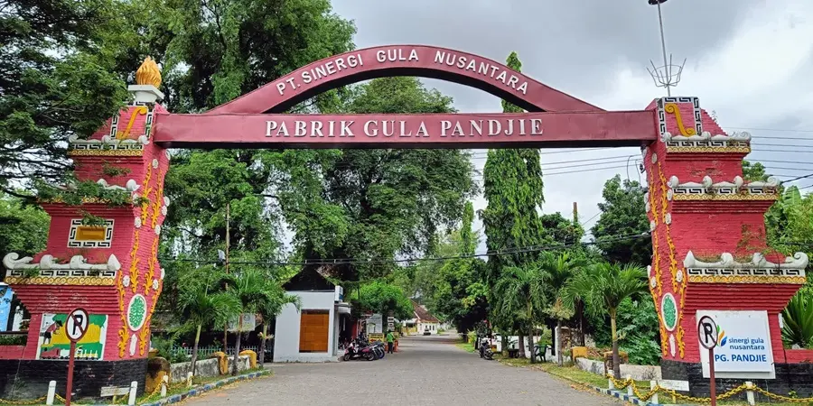

PT Sinergi Gula Nusantara
Mengenal lebih dekat profil, sejarah, dan perkembangan unit operasional PT Sinergi Gula Nusantara dalam memajukan industri gula nasional.
Pabrik Gula Pandjie

Pabrik Gula Pandjie
PG Pandjie yang berlokasi di Kelurahan Mimbaan, Panji, Kabupaten Situbondo, Jawa Timur didirikan oleh pemerintahan Belanda pada tahun 1884 di bawah naungan kantor pusat “N.V. Tiedeman & Van Kerchem” (Batavia/Soerabaya/Amsterdam) di Negeri Belanda dan perwakilan di Surabaya (masih di tahun 1950).
Perkembangan status sejak peralihan sebagai berikut: 1) Tahun 1958 PG Pandjie bergabung dengan PG lain di bawah kendali Perusahaan Perkebunan Negara Baru Unit IV, 2) Tahun 1963 PG Pandjie dialihkan ke dalam PPN Gula Kesatuan IV, 3) Tahun 1968 PG Pandjie masuk Perusahaan Negara Perkebunan XXV, 4) Tahun 1975 PG Pandjie masuk pada Perusahaan Terbatas Perkebunan Nusantara XI (Persero) sampai sekarang.
Beroperasi sejak masa kolonial, sebelum restrukturisasi BUMN Perkebunan tahun 1996, PG yang secara administratif masuk wilayah Kabupaten Situbondo ini menjadi unit usaha PTP XXIV-XXV. Meskipun lokasinya di tengah kota yang secara geografis menghadapi banyak hambatan dalam pengembangan areal, PG Pandjie tetap eksis dan terus berkembang memberikan yang terbaik bagi kemajuan perseroan dan kejayaan industri gula nasional. Perwujudan PG Pandjie sebagai industri ramah lingkungan dilakukan melalui pengelolaan lingkungan secara terintegrasi, baik untuk pemasangan dust collector maupun penanganan limbah padat dan cair.
Pada tahun 2011, PG Pandjie merencanakan giling tebu sebanyak 200.015,0 ton (tebu sendiri 34.415,0 ton dan tebu rakyat 165.600,0 ton) yang diperoleh dari areal seluas 2.580,6 ha (TS 460,0 ha dan TR 2.120,0 ha). Gula yang dihasilkan diproyeksikan mencapai 15.139,0 ton (milik PG 6.726,3 ton dan milik petani 8.412,7 ton) dan tetes 9.000,7 ton. Selain areal berasal dari kecamatan dalam wilayah Kabupaten Situbondo (tebu yang tidak tergiling di PG Assembagoes), juga terdapat di Kabupaten Jember yang pembinaannya dilakukan PG Pandjie sejak awal. Kapasitas PG 1.700 tth (tidak termasuk jam berhenti) atau 1.471,9 tth sudah termasuk jam berhenti. PG Pandjie beberapa kali mengalami pemantapan kapasitas sejalan meningkatnya ketersediaan tebu dari yang semula hanya 1.100 tth.
Pengembangan areal terus dilakukan, baik TS maupun TR, seirama kapabilitas PG untuk menggiling tebu lebih banyak. Sasaran utama adalah daerah sawah berpengairan teknis yang secara agronomis juga digunakan untuk budidaya padi dan palawija. PG Pandjie yakin melalui penerapan agroekoteknologi, kecukupan agroinputs, penataan masa tanam, dan perbaikan manajemen tebang-angkut, produktivitas yang meningkat akan menjadi daya tarik bagi petani untuk menjadikan tebu sebagai komoditas alternatif.
Selain itu, pengembangan juga dilakukan ke lahan kering sepanjang air dapat dipompa secara artesis. Upaya menarik animo petani juga dilakukan melalui perbaikan kinerja pabrik dan kelancaran giling. Sadar akan pentingnya tebu rakyat dalam pemenuhan kebutuhan bahan baku dan pengembangan PG lebih lanjut, pelayanan prima kepada petani terus diupayakan dengan sebaik-baiknya. Secara periodik, PG menyelenggarakan Forum Temu Kemitraan (FTK) guna membahas berbagai persoalan yang dihadapi petani, baik di luar maupun dalam masa giling. Dalam upaya peningkatan produktivitas, PG Pandjie antara lain melakukan optimalisasi masa tanaman dan penataan varietas menuju komposisi ideal dengan proporsi antara masak awal, tengah, dan akhir dengan sasaran 2010/11 berbanding 30-40-30. Melalui kebun semacam ini, petani diharapkan dapat belajar lebih banyak tentang pengelolaan kebun melalui best agricultural practices.
Pabrik Gula Pandjie masih aktif melaksanakan aktivitas giling hingga saat ini, beralamat di Jl. Raya Banyuwangi KM. 3, Panji, Kecamatan Panji, Kabupaten Situbondo, Jawa Timur.